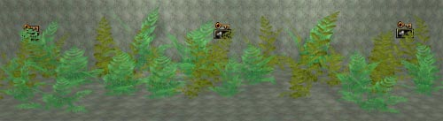
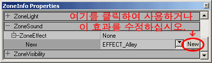
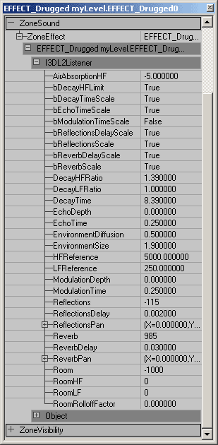

UDN
Search public documentation:
ExampleMapsSoundsKR
English Translation
日本語訳
Interested in the Unreal Engine?
Visit the Unreal Technology site.
Looking for jobs and company info?
Check out the Epic games site.
Questions about support via UDN?
Contact the UDN Staff
日本語訳
Interested in the Unreal Engine?
Visit the Unreal Technology site.
Looking for jobs and company info?
Check out the Epic games site.
Questions about support via UDN?
Contact the UDN Staff
사운드 튜토리얼
문서 요약: 여러가지 방법으로 사운드를 재생하는 방법에 관한 종합적인 고찰. 초보자에게 유용하지만 고급 사용자도 이 목록들에서 열거되는 속성들을 살펴보면 도움이 됨. 문서 변경 내역: 배경 사운드(ambient sound) 설정을 명백하게 설명하기 위해 Chris Linder(DemiurgeStudios?)가 마지막으로 업데이트함. 문서 요약에 관해 Tom Lin(DemiurgeStudios?)이 업데이트 함. 최초 저자: Jason Lentz(DemiurgeStudios?).개요
본 문서에서는 액터 및 트리거될 수 있는 사운드와 연관된 AmbientSounds 및 ZoneInfo Sounds 사운드의 배치 및 사용 방법에 대해 배우겠습니다. 본 문서는 여러분께서 UnrealEd 인터페이스에 익숙하고 여러분 고유의 raw 사운드 파일을 만들 수 있거나 이미 만든 것이 있어 사용할 수 있다는 것을 가정합니다. 여러분 고유의 예제 맵의 작성을 위해 본 문서는 여러분께서 이미 BSP Zones, StaticMeshes, Movers, Triggers를 포함한 레벨을 가졌다는 것을 가정합니다.AmbientSounds (배경 사운드)
AmbientSound를 배치하려면 반드시 Actors Browser를 열고 Actor --> KeyPoint --> AmbientSound로 이동합니다. 그런 다음 레벨을 마우스 오른쪽 버튼으로 클릭하여 AmbientSound 액터를 배치합니다. 이 사운드에 대한 모든 설정은 속성 창에서 찾아 볼 수 있습니다.
이 사운드에 대한 모든 설정은 속성 창에서 찾아 볼 수 있습니다.
 다음은 각 설정이 무엇을 제어하는지에 관한 설명입니다.
다음은 각 설정이 무엇을 제어하는지에 관한 설명입니다.
| 속성 | 설명 |
|---|---|
| AmbientSound | 여기에서 Sound Browser에서 선택한 사운드를 AmbientSound Actor에 적용하게 됩니다. 이것은 이 액터의 배경 반복 사운드 효과입니다. AmbientSound는 모든 Actor 에 설정될 수 있고 Actor Browser에서의 AmbientSound 일 필요는 없습니다. 3D에서 들리기 위해서는 사운드는 반드시 모노 사운드이어야 합니다. 만약 사운드가 스테레오이면 3D에서 재생되지 않을 것입니다. 사운드가 3D에서 재생되지 않기 때문에 거리가 멀어짐에 따라 소리가 약해지지도 않고 사운드의 방향에 따른 스테레오 사운드의 분할도 발생하지 않게 됩니다. 스테레오 사운드는 여러분이 SoundRadius 내에 있을때 최대 볼륨으로 재생되고 반경 밖에서는 재생되지 않게 됩니다. |
| bFullVolume | 이것이 true로 설정된 경우, 이 액터의 배경 사운드는 <여러분 게임>.ini_ 에 있는 AmbientVolume 설정을 무시하게 됩니다. 볼륨에 대한 보다 자세한 설명은 아래의 SoundVolume 을 참조해 주십시오. |
| SoundOcclusion | SoundOcclusion 은 4가지 설정을 가지고 있습니다. OCCLUSION_Default – 아래에 설명된 OCCLUSION_BSP처럼 작동함. OCCLUSION_None – 사운드가 전혀 차단되지 않음. OCCLUSION_BSP – BSP에 의해 사운드가 차단됨. OCCLUSION_StaticMeshes – 정적 메쉬 및 BSP에 의해 사운드가 차단됨. 사운드를 내는 액터가 위에서 설명된 설정에 근거하여 차단될때 어쿨루젼(차단)은 반경을 65% 줄임으로써 작동됩니다. 사운드의 반경이 줄어들으므로 사운드가 더 조용해질 것입니다. 어쿨루젼은 항상 바로 작동되지 않습니다. 부드러운 전환을 위해 반경의 변화는 시간에 걸쳐 서서히 보간됩니다. |
| SoundPitch | SoundPitch 는 32와 128 사이로 고정된 스케일입니다. 64는 기본 값으로서 사운드를 보통 피치/속도로 재생한다라는 것을 의미합니다 32에서는 사운드가 원래 사운드의 절반 속도로 재생되고, 재생되는데 2배의 시간이 걸리며, 사운드는 한 옥타브 낮게 재생됩니다. 128에서는 사운드가 원래 사운드의 2배 빠른 속도로 재생되고, 재생되는데 절반의 속도가 걸리며, 사운드는 한 옥타브 높게 재생됩니다. 이것은 추가적으로 사운드의 피치를 높이고 낮히는 도플러 쉬프트(Doppler Shift)를 무시하게 됩니다. |
| SoundRadius | Unreal Units에서 Radius 의 값은 사운드의 최대 범위의 100분의 1입니다. 그러므로 Radius 의 값에 100을 곱하면 사운드를 더 이상 듣지 못하게 되는 거리를 갖게 됩니다. 반경의 가장자리에서의 전환은 완변하게 매끄럽지 못합니다. 일반 사운드 반경 안으로 들어서게 되면 갑자기 소리를 듣게 될 것입니다. 희미하겠지만 여러분께서 주의를 기울이면 여전히 선명하게 식별할 수 있는 전환이 존재합니다. |
| SoundVolume | SoundVolume 의 스케일은 0(소리 없음)에서부터 255(Unrealed의 사운드 브라우저에서 사운드가 재생되는 볼륨)까지 입니다. 사운드를 더 크게 할 수는 없고 단 더 부드럽게 만들 수만 있습니다. 255보다 더 큰 값을 입력하는 것은 가능하지만, 그렇게 하면 볼륨 값이 반복되게 하여 256=0, 257=1, 등의 설정을 초래하게 됩니다. SoundVolume 은 모든 배경 사운드에 대해 0.0에서 1.0로의 곱수인 AmbientVolume 에 의해 스케일이 조절됩니다. AmbientVolume 은 <여러분 게임>.ini_ 에 정의되어 있습니다. |
| TransientSoundRadius | 배경 사운드에(ambinet sound)에 영향을 주지 않음. |
| TransientSoundVolume | 배경 사운드에 영향을 주지 않음 |

ZoneInfo Sounds (존 정보 사운드)
여러분 맵에 사운드를 추가할 수 있는 추가 방법은 여러분 Zone에 배치하는 ZoneInfo Actor를 통한 방법입니다. AmbientSound Actor에서와 같이 ZoneInfo Properties을 열고 Sound 풀다운 메뉴 밑에 위치한 AmbientSound 항목에 사운드를 지정할 수 있습니다. ZoneInfo 속성 밑에 있는 Sound 탭은 여러분께서 예상한 것과는 달리 전체 존에 영향을 미치지 않습니다. 그냥 AmbientSound 액터와 같은 기능을 합니다. 지역 또는 존에 걸친 블랭킷 사운드를 제작하려면 만족스러운 사운드 액터들의 블랭킷을 제작할때까지 사운드의 여러 소스들을 지정할 필요가 있습니다.ZoneEffects (존 효과)
ZoneSound 탭 아래서 ZoneEffect을 선택할 수 있습니다. ZoneEffect?의 사용은 그 존에서 듣게되는 모든 사운드에 대한 필터의 역할을 하게 됩니다. ZoneEffect을 사용하려면, 사용하고자 하는 효과와 비슷한 효과를 선택하고 난 후 "New" 버튼을 클릭합니다.
주의: 이 설정은 EAX 3.0 SoundBlaster Audigy 카드 사용시에만 작동합니다. Unreal Ed가 EAX 사운드를 및 3DSound를 사용하게 설정되어 있는지 확인하십시오(System 폴더에 있는 UW.ini 파일을 통해 설정될 수 있음). "New" 를 클릭함으로써 ZoneInfo에게 그 설정을 사용하겠다라는 것을 알리게 됩니다. 여기에는 복도, 얼음 궁전의 중간 크기의 방, 고급 자동차를 운전하는 효과, 등등과 같은 ZoneEffect들을 포함한 수많은 기본 설정이 있습니다. 그러나 만약 원하는 ZoneEffect를 찾지 못하는 경우, 여러분 고유의 존 효과를 제작할 수 있습니다. 여러분이 찾고 있는 효과에 가장 근접한 ZoneEffect를 가지고 시작한 다음 "NEW" 버튼을 누르십시오. 그럼, 3개의 탭이 나타나게 되지만 가운데 위치한 "I3DL2Listener." 의 설정만을 변경할 수 있습니다. 이 탭을 확장합니다.
아래는 각 설정이 무엇을 제어하는지에 대한 설명입니다.| 속성 | 설명 | 범위 |
|---|---|---|
| AirAbsorptionHF | 이 설정을 사용하여 각기 다른 점조도(안개가 짙은, 건조한, 연기 나는, 등등)의 대기를 통한 사운드 전송의 시뮬레이션을 할 수 있음. 설정값이 낮을 수록 대기의 흡수성은 커짐. | [-100.0, 0.0] |
| bDecayHFLimit | 이 값이 True인 경우, 고주파 감쇠 시간이 자동적으로 AirAbsorptionHF 의 설정에서 파생된 한계값 아래로 유지되고 _DecayHFRatio_의 영향을 받지 않게 됨. 고주파에서의 인위적으로 긴 감쇠 시간의 위험 부담 없이 자연스러운 사운드 리버브(반향) 감쇠를 유지하는데 유용함. | [True/False] |
| bDecayTimeScale | 이 값이 True인 경우, EnvrionmentSize 를 변경하면 DecayTime 이 비례적 변경되게 됨. False이면 EnvrionmentSize 의 변경은 아무런 효과를 가져오지 않게 됨. | [True/False] |
| bEchoTimeScale | 이것에 대한 자세한 내용은 추후에 추가될 예정임 | [True/False] |
| bModulationTimeScale | 이것에 대한 자세한 내용은 추후에 추가될 예정임 | [True/False] |
| bReflectionsScale | 이 값이 True인 경우, EnvironmentSize 를 변경하면 ReflectionsDelay 가 비례적으로 변경되게 되고 방의 크기가 커지게 되면서 벽간의 거리가 더 멀어지게 되는 효과를 초래하게 됨. | [True/False] |
| bReflectionsDelayScale | 이것에 대한 자세한 내용은 추후에 추가될 예정임 | [True/False] |
| bReverbDelayScale | 이 값이 True인 경우, EnvrionmentSize 를 변경하면 ReverbDelay 가 비례적으로 변경되게 됨. 그렇지 않으면 EnvironmentSize 는 아무런 효과를 갖지 않음. | [True/False] |
| bReverbScale | 이 값과 ReflectionDelayScale 모두가 True인 경우, EnvrionmentSize 의 증가는 Reflections 의 감쇄를 유발하게 됨. 그렇지 않으면 EnvironmentSize 는 Reflections 에 아무런 영향을 미치지 않음. | [True/False] |
| DecayHFRatio | DecayTime에 설정된 시간에 대한 상대적인 고주파 감쇠 시간의 비율. 1.0으로의 설정은 중립임: 모든 주파수에 대해 감쇠 시간이 동일해짐. 더 높은 값의 설정은 고주파에서 긴 감쇠 시간을 갖는 좀더 선명한 리버브(반향)을 만들게 되고, 1.0 보다 낮은 설정에서는 리버브가 좀더 자연스러워짐. 이 값은 EnvironmentSize 설정의 변경에 의해 변경됩니다. | [0.1, 2.0 초] |
| DecayLFRatio | 저주파 대 중간주파 감쇠 시간 비율[0.1, 2.0] | |
| DecayTime | 중간 주파수에서의 리버브 감쇠 시간 | [0.1, 20.0 초] |
| EchoDepth | 에코 깊이 | [] |
| EchoTime | 에코 시간 | [] |
| EnvironmentDiffusion | 이 설정은 에코의 밀도를 제어함. 1.0로 설정하면 에코들이 서로 겹치게 되는 반면에 0.0으로 설정하면 연속적인 에코가 서로 겹치지 않고 분리되며 분명히 구별할 수 있게 됨. | [0.0, 1.0] |
| EnvironmentSize | 이것은 배경 "방" 의 크기를 조절하여 Unreal Units으로 나타냄. 이 설정을 변경함으로써 상대적 조정이 저레벨 속성에 하나의 요인으로 포함됨((Reflections, ReflectionsDelay, Reverb, ReverbDelay, DecayTime) | [1.0, 100.0 unreal 단위] |
| HFReference | 고주파수 참조 | [] |
| LFReference | 저주파수 참조 | [] |
| ModulationDepth | 변조 깊이 | [] |
| ModulationTime | 변조 시간 | [] |
| Reflections | 룸 효과에 비교하여 상대적인 초기 리플렉션 레벨의 볼륨. 좁은 공간의 시뮬레이션을 하려면 이 설정을 증가해야 함. 부분적으로 개방된 환경에 대해서는 기본 설정을 유지하고 Reverb 설정을 감소시킴. 이 값은 EnvironmentSize 설정의 변경에 의해 변경됨. | [-10,000, 1,000 (dB의 100분의 1)] |
| ReflectionsDelay | 지연 소스에서 직접 경로를 통한 도착 시간과 소스에서 첫 번째 리플렉션을 거친 도착 시간의 차이가 지연임. 이 값은 EnvironmentSize 설정의 변경에 의해 변경됨. | [0.0, 0.3 밀리초] |
| ReflectionsPan | 초기 리플렉션 패닝 벡터 | [] |
| Reverb | 룸 효과에 비교하여 상대적으로 늦은 리버브 레벨 이 값은 EnvironmentSize 설정의 변경에 의해 변경됨. | [-10,000, 2,000 (dB의 100분의 1)] |
| ReverbDelay | 초기 리플렉션에 비교하여 상대적으로 늦은 리버브 지연 시간 이 값은 EnvironmentSize 설정의 변경에 의해 변경됨. | [0.0, 0.1] |
| ReverbPan | 늦은 리버브 패닝 벡터 | [] |
| Room | Reflections 및 Reverb 에 대한 마스터 볼륨 콘트롤. 이것은 메인 사운드 버퍼(청취자)에 있는 사운드 믹스에 추가될 리플렉션 및 리버브의 최대 리버브의 최대치를 설정함. | [-10,000, 0.0 (dB의 100분의 1)] |
| RoomHF | 이것은 고주파수에서 반사된 사운드를 감소시킴으로써 반사된 사운드를 추가 조절함. | [-10,000, 0.0 (dB의 100분의 1)] |
| RoomLF | 이것은 저주파수에서 반사된 사운드를 감소시킴으로써 반사된 사운드를 추가 조절함. | [-10,000, 0.0 (dB의 100분의 1)] |
| RoomRolloffFactor | EAX에서 Reflections 및 Reverb 를 감소시키는데 사용 가능한 두가지 방법 중 하나. RoomRolloffFactor를 1.0으로 설정하면 반사된 사운드가 거리가 두배로 증가될때마다 6 dB로 감쇠하도록 함. 1.0 이외의 다른 값은 [(Source Listener Distance) - (Minimum Distance)]에 의해 적용되는 스케일 인수와 동일함. | [0.0, 10.0] |
StaticMeshes 및 Movers에서의 사운드
사운드는 또한 AmbientSound Actor의 속성을 설정 또는 ZoneInfo에 Sound를 지정하는 것과 같은 동일한 방법을 통해 StaticMeshes에 감춰질 수 있습니다. 사운드는 모든 액터에 지정될 수 있으며, 그 방법은 액터 속성 창에서 Sound룰아웃을 열고 원하는 사운드를 지정합니다. Mover는 MoverSounds 라 호칭하는 고유의 특별한 롤아웃을 가지고 있게 좀더 유연성을 가집니다. 이 점에 관해서는 MoversTutorial에서 좀더 자세히 설명되고 있지만 설정 이름 자체가 작동 방법이 어떠할지에 대해 설명하고 있습니다. 이러한 설정은 문 열고 닫는 소리, 승강기 이동 소리, 움직이는 형상과 관련된 모든 사운드를 설정하는데 유용합니다.
이 점에 관해서는 MoversTutorial에서 좀더 자세히 설명되고 있지만 설정 이름 자체가 작동 방법이 어떠할지에 대해 설명하고 있습니다. 이러한 설정은 문 열고 닫는 소리, 승강기 이동 소리, 움직이는 형상과 관련된 모든 사운드를 설정하는데 유용합니다.
트리거될 수 있는 사운드
이 섹션은 추후에 추가될 예정입니다.다운로드
아래에서 본 예제의 내용을 포함한 암축된 아카이브를 다운로드 받을 수 있습니다.- SoundsDemo.zip (Unreal Engine 2 빌드 2226 전용)
- EM_SoundsDemo_RT.zip (Unreal Engine 2 빌드 2226 전용)